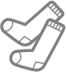

<main>
    <h1>{{title}}</h1>
    <div id="alertScreenreader" aria-live="polite"></div>
	<div id="app">
        <p>Loading...</p>
    </div>
</main>
<footer>
    <p>Icons by <a href="https://thenounproject.com/term/door/311732/">Jamie Dickinson</a>, <a href="https://thenounproject.com/term/monster/184225/">Nicky Knicky</a>, <a href="https://thenounproject.com/term/monster/1510400/">Alvaro Cabrera</a>, <a href="https://thenounproject.com/term/monster/28460/">Eliricon</a>, <a href="https://thenounproject.com/term/monster/82823/">April Yang</a>, <a href="https://thenounproject.com/term/monster/1062009/">tk66</a>, <a href="https://thenounproject.com/term/monster/24990/">Alex WaZa</a>, <a href="https://thenounproject.com/term/monster/37212/">Husein Aziz</a>, <a href="https://thenounproject.com/term/monster/2236082">iconcheese</a>, and <a href="https://thenounproject.com/term/socks/38451/">Yazmin Alanis</a>.</p>
</footer>

<script>
    // Selectors
    // The monsters and socks
    const monsters = [
        {
            image: 'monster1.svg',
            alt: 'Small, round, monster with no limbs.'
        },
        {
            image: 'monster2.svg',
            alt: 'Big monster with one big eye, long thin arms, and long thin legs.'
        },
        {
            image: 'monster3.svg',
            alt: 'Monster with a large, vertical mouth running through its body.'
        },
        {
            image: 'monster4.svg',
            alt: 'Monster with four arms and two horns.'
        },
        {
            image: 'monster5.svg',
            alt: 'Short monster with one big eye, a spiky head who looks sad.'
        },
        {
            image: 'monster6.svg',
            alt: 'Monster with one eye and a triangle body doing a handstand.'
        },
        {
            image: 'monster7.svg',
            alt: 'Cute monster with one big eye and tentacles for arms.'
        },
        {
            image: 'monster8.svg',
            alt: 'Monster with an egg-shaped body, no legs and one eye.'
        },
        {
            image: 'monster9.svg',
            alt: 'Monster that looks like a concerned ant.'
        },
        {
            image: 'monster10.svg',
            alt: 'Monster with no arms, a round body, eyes on stalks, and a magnificent mustache.'
        },
        {
            image: 'monster11.svg',
            alt: 'Monster with yeti energy and a big smile.'
        },
        {
            image: 'sock.svg',
            alt: 'Ah! A pair of socks! Code twenty three nineteen!'
        }
    ];

    // The number of monsters you've revealed
    let monstersRevealed;

    const informationalText = document.querySelector('#alertScreenreader');

    // Methods
    /**
    * Randomly shuffle an array
    * https://stackoverflow.com/a/2450976/1293256
    * @param  {Array} array The array to shuffle
    * @return {String}      The first item in the shuffled array
    */
    function shuffle(array) {
        var currentIndex = array.length;
        var temporaryValue, randomIndex;

        // While there remain elements to shuffle...
        while (0 !== currentIndex) {
            // Pick a remaining element...
            randomIndex = Math.floor(Math.random() * currentIndex);
            currentIndex -= 1;

            // And swap it with the current element.
            temporaryValue = array[currentIndex];
            array[currentIndex] = array[randomIndex];
            array[randomIndex] = temporaryValue;
        }

        return array;
    };
    
    function buildMonsterGrid(monster, index) {
        return '<li class="grid-cell">' + 
            '<button data-monster-id="' + index + '">' + 
                '' + 
                'Open Door ' + (index + 1)  +
            '</button>' + 
        '</li>'
    }

    function showMonsterGrid() {
        // Reset the monster count
        monstersRevealed = 0;
        // Shuffle the monsters array
        shuffle(monsters);

        informationalText.innerHTML = '<p>Click a door to reveal a monster. Try not to find the sock.</p>';
        app.innerHTML = '<p role="status" aria-live="polite">Score: <span id="score">0</span> out of '+ (monsters.length - 1) +'</p>' + 
        '<ul class="grid monster-grid">' + monsters.map(buildMonsterGrid).join('') + '</ul>';
    }

    function youLose() {
        informationalText.innerHTML = '' + 
        '<h2>Ah! A pair of socks! <span aria-label="twenty three nineteen">2319<span>!</h2>' + 
        '<button id="playAgainBtn">Play Again</button>';
        app.innerHTML = '';
    }

    function youWin() {
        informationalText.innerHTML = '<h2>Great job! You won!</h2>' + 
        '<button id="playAgainBtn">Play Again</button>';
        app.innerHTML = '';
    }

    function clickHandler() {
        let score = document.querySelector('#score');

        // If we're on the winning or losing screen, and the user clicks Play Again
        if(event.target.matches('#playAgainBtn')) {
            showMonsterGrid();
            return;
        }

        // Check if the thing that's clicked is a monster door
        let door = event.target.closest('[data-monster-id]');
        if(!door) return;

        // Get the monster's index
        let id = door.getAttribute('data-monster-id');

        if (monsters[id].image.includes('sock')) {
            youLose();
            return;
        }

        monstersRevealed++

        if(monstersRevealed === monsters.length - 1) {
            youWin();
            return;
        }

        score.textContent = monstersRevealed;
        
        // Get the door button's outer grid cell element
        let gridCell = door.parentNode;

        // Update the cell to show the monster
        gridCell.innerHTML = '';
    }

    // Events
    // Show the grid
    showMonsterGrid();

    document.addEventListener('click', clickHandler, false)

</script>